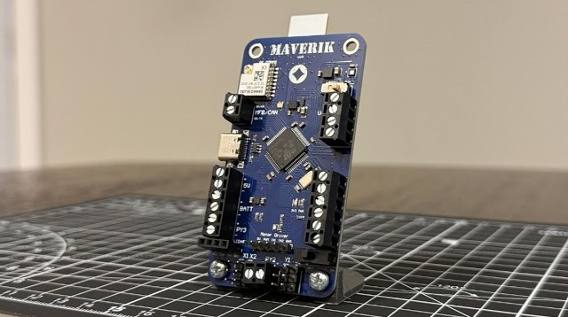

Garrett Russell.
I design power electronics, PCBs, and mixed-signal silicon — hardware that gets built, tested, and shipped.
EE @ Purdue '28 · previously Reflect Orbital + SpaceX
01 — Projects
Selected work

MAVERIK — Thrust-Vector-Control Flight Computer
Altium · STM32 · C/C++ · Kalman filters · control systems
Custom flight computer and full software stack — sensor drivers, Kalman filter, state machine, and a direct-quaternion non-linear P²+I controller that held a rocket's attitude within 5° of setpoint in flight. Build and test content has reached 1M+ views.
watch the flights →
V3 Flight Computer — Reflect Orbital
Altium · power electronics · EMI/EMC · board bring-up
Owned trades, schematic, layout, and bring-up. Plus a 15W constant-current magnetorquer driver tuned to kill EMI, and a 60W 28V–28V isolated flyback for a custom radio.
4-bit 10 MS/s SAR ADC — Purdue SoCET
Cadence Virtuoso · SystemVerilog · analog design
Successive-approximation ADC for energy-critical applications — transistor-level comparator design plus SAR control logic written and simulated in SystemVerilog.
High-Voltage Capacitor Charger
power electronics · magnetics · prototyping
A zero-voltage-switching flyback driver for rapidly charging a large capacitor bank — designed, built, and tested at home.
18650 Battery Assembler
robotics · imitation learning · Python
Trained a robotic arm to assemble 18650 cells from teleoperated demonstrations using an ACT imitation-learning policy. Honorable Best AMD Hack at StarkHacks.
02 — Where I've been
Experience
May – Aug 2026
Reflect Orbital · Electrical Engineering Intern
Flight computer design end-to-end, power converters, EMI-conscious layout, radiation-tolerant compute trades.
Jan – May 2026
Purdue SoCET · Analog Design Engineer
SAR ADC and Strong-Arm comparator design in Cadence Virtuoso for a student-built SoC.
Jan – Aug 2025
SpaceX · Automation & Controls Engineering Intern
Designed the full electronics suite for an auto-leveling vehicle-transport system; shipped production automation tools (panels, PCBs, PLCs) factory-wide.
Aug – Dec 2024
The Data Mine (Viasat) · Undergraduate Researcher
Monte Carlo simulation of orbital collisions in Python to model sustainable debris limits.
03 — Education
Education
Aug 2024 – May 2028
Purdue University · B.S. Electrical Engineering
GPA 4.0/4.0 · Dean's List ×4 · NSCF Keynote Scholarship Finalist (top 2.5%)
ASIC DESIGN · MICROPROCESSOR SYSTEMS · SIGNALS & SYSTEMS · DIGITAL DESIGN
04 — About
What I'm after
I'm interested in the hardware that makes AI possible — efficient compute, the silicon it runs on, and the power systems that feed it. I think analog and mixed-signal design will play a big role in making compute more efficient, and I like proving ideas by building them: boards, converters, controllers, and the occasional self-steering rocket.